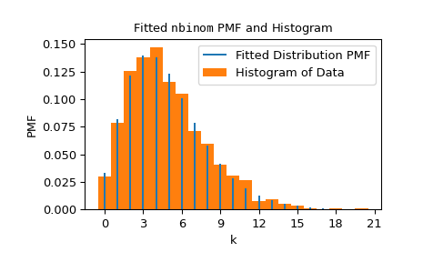

The object representing the distribution to be fit to the data.
data1D array_like
The data to which the distribution is to be fit. If the data contain
any of np.nan, np.inf, or -np.inf, the fit method will
raise a ValueError.
boundsdict or sequence of tuples, optional
If a dictionary, each key is the name of a parameter of the
distribution, and the corresponding value is a tuple containing the
lower and upper bound on that parameter. If the distribution is
defined only for a finite range of values of that parameter, no entry
for that parameter is required; e.g., some distributions have
parameters which must be on the interval [0, 1]. Bounds for parameters
location (loc) and scale (scale) are optional; by default,
they are fixed to 0 and 1, respectively.
If a sequence, element i is a tuple containing the lower and upper
bound on the ith parameter of the distribution. In this case,
bounds for all distribution shape parameters must be provided.
Optionally, bounds for location and scale may follow the
distribution shape parameters.
If a shape is to be held fixed (e.g. if it is known), the
lower and upper bounds may be equal. If a user-provided lower or upper
bound is beyond a bound of the domain for which the distribution is
defined, the bound of the distribution’s domain will replace the
user-provided value. Similarly, parameters which must be integral
will be constrained to integral values within the user-provided bounds.
guessdict or array_like, optional
If a dictionary, each key is the name of a parameter of the
distribution, and the corresponding value is a guess for the value
of the parameter.
If a sequence, element i is a guess for the ith parameter of the
distribution. In this case, guesses for all distribution shape
parameters must be provided.
If guess is not provided, guesses for the decision variables will
not be passed to the optimizer. If guess is provided, guesses for
any missing parameters will be set at the mean of the lower and
upper bounds. Guesses for parameters which must be integral will be
rounded to integral values, and guesses that lie outside the
intersection of the user-provided bounds and the domain of the
distribution will be clipped.
method{‘mle’, ‘mse’}
With method="mle" (default), the fit is computed by minimizing
the negative log-likelihood function. A large, finite penalty
(rather than infinite negative log-likelihood) is applied for
observations beyond the support of the distribution.
With method="mse", the fit is computed by minimizing
the negative log-product spacing function. The same penalty is applied
for observations beyond the support. We follow the approach of [1],
which is generalized for samples with repeated observations.
optimizercallable, optional
optimizer is a callable that accepts the following positional
argument.
funcallable
The objective function to be optimized. fun accepts one argument
x, candidate shape parameters of the distribution, and returns
the objective function value given x, dist, and the provided
data.
The job of optimizer is to find values of the decision variables
that minimizes fun.
optimizer must also accept the following keyword argument.
boundssequence of tuples
The bounds on values of the decision variables; each element will
be a tuple containing the lower and upper bound on a decision
variable.
If guess is provided, optimizer must also accept the following
keyword argument.
x0array_like
The guesses for each decision variable.
If the distribution has any shape parameters that must be integral or
if the distribution is discrete and the location parameter is not
fixed, optimizer must also accept the following keyword argument.
integralityarray_like of bools
For each decision variable, True if the decision variable
must be constrained to integer values and False if the decision
variable is continuous.
optimizer must return an object, such as an instance of
scipy.optimize.OptimizeResult, which holds the optimal values of
the decision variables in an attribute x. If attributes
fun, status, or message are provided, they will be
included in the result object returned by fit.
A namedtuple containing the maximum likelihood estimates of the
shape parameters, location, and (if applicable) scale of the
distribution.
successbool or None
Whether the optimizer considered the optimization to terminate
successfully or not.
messagestr or None
Any status message provided by the optimizer.
The object has the following method:
nllf(params=None, data=None)
By default, the negative log-likehood function at the fitted
params for the given data. Accepts a tuple containing
alternative shapes, location, and scale of the distribution and
an array of alternative data.
plot(ax=None)
Superposes the PDF/PMF of the fitted distribution over a normalized
histogram of the data.
Optimization is more likely to converge to the maximum likelihood estimate
when the user provides tight bounds containing the maximum likelihood
estimate. For example, when fitting a binomial distribution to data, the
number of experiments underlying each sample may be known, in which case
the corresponding shape parameter n can be fixed.
Shao, Yongzhao, and Marjorie G. Hahn. “Maximum product of spacings
method: a unified formulation with illustration of strong
consistency.” Illinois Journal of Mathematics 43.3 (1999): 489-499.
Examples
Suppose we wish to fit a distribution to the following data.
Suppose we do not know how the data were generated, but we suspect that
it follows a negative binomial distribution with parameters n and p.
(See scipy.stats.nbinom.) We believe that the parameter n was fewer
than 30, and we know that the parameter p must lie on the interval
[0, 1]. We record this information in a variable bounds and pass
this information to fit.
fit searches within the user-specified bounds for the
values that best match the data (in the sense of maximum likelihood
estimation). In this case, it found shape values similar to those
from which the data were actually generated.
>>> res.paramsFitParams(n=5.0, p=0.5028157644634368, loc=0.0) # may vary
We can visualize the results by superposing the probability mass function
of the distribution (with the shapes fit to the data) over a normalized
histogram of the data.
>>> importmatplotlib.pyplotasplt# matplotlib must be installed to plot>>> res.plot()>>> plt.show()

Note that the estimate for n was exactly integral; this is because
the domain of the nbinom PMF includes only integral n, and the nbinom
object “knows” that. nbinom also knows that the shape p must be a
value between 0 and 1. In such a case - when the domain of the distribution
with respect to a parameter is finite - we are not required to specify
bounds for the parameter.
>>> bounds={'n':(0,30)}# omit parameter p using a `dict`>>> res2=stats.fit(dist,data,bounds)>>> res2.paramsFitParams(n=5.0, p=0.5016492009232932, loc=0.0) # may vary
If we wish to force the distribution to be fit with n fixed at 6, we can
set both the lower and upper bounds on n to 6. Note, however, that the
value of the objective function being optimized is typically worse (higher)
in this case.
>>> bounds={'n':(6,6)}# fix parameter `n`>>> res3=stats.fit(dist,data,bounds)>>> res3.paramsFitParams(n=6.0, p=0.5486556076755706, loc=0.0) # may vary>>> res3.nllf()>res.nllf()True # may vary
Note that the numerical results of the previous examples are typical, but
they may vary because the default optimizer used by fit,
scipy.optimize.differential_evolution, is stochastic. However, we can
customize the settings used by the optimizer to ensure reproducibility -
or even use a different optimizer entirely - using the optimizer
parameter.